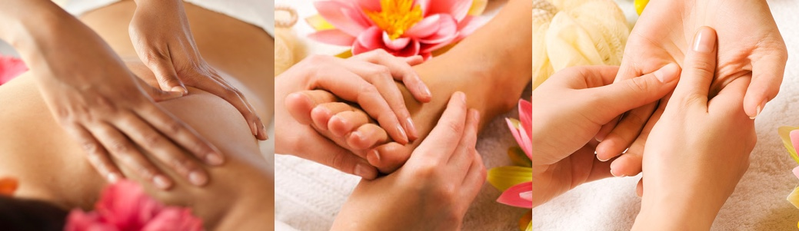

The whole World is Energy
Во время сеансов происходит: выпрямление позвоночника, исправление искривления таза и выравнивание длины ног, освобождение зажатых нервов.
Программа Терапия позвоночника - это авторская программа, которая состоит из:
10 сеансов Балийского масляного массажа или Тайского Традиционного массажа
10 сеансов Терапия Божественного выравнивания тела
10 сеансов Краниосакральная терапия

Балийский массаж - это масляный массаж всего тела, от кончиков пальцев ног до мокушки головы.
Он прекрасно сочетается с Энергетическими целительными сеансами, позволяя Вам раскрыться для принятия Энергии во всем совершенстве и в полном объеме.
Остров Бали - сказочное и райское место на Земле, своим магнетизмом он привлекает и завораживает людей со всего мира.
Балийские техники оздоровления сочетают в себе наследие различных культур Востока.
Еще с древних времен была открыта удивительная целительная сила прикосновений. Воздействие на определенные точки на теле происходит контакт с внутренними органами человека, с помощью массажа и энергии рук наступает улучшение состояния здоровья. Убираются внутренние блоки, которые мешают естественному течению энергии в теле, вызывая различные заболевания. Улучшается эмоциональное состояние, уходит стресс, депрессии.
Балийский массаж это настоящая жемчужина среди всех видов массажей, сочетающий различные терапевтические и массажные техники: тайскую, китайскую, индийскую, аюрведическую.
Массируя тело по энергетическим меридианам, мастер высвобождает заблокированную энергию.
Балийский массаж является прекрасным средством для снятия мышечного напряжения, уменьшения стресса, гармонизации и сбалансированности тела, обретения душевного покоя и равновесия.
Традиционный балийский массаж помогает улучшить состояние при:
-головных болях и мигренях
-повышенной утомляемости
-интенсивных физических, умственных и эмоциональных нагрузках
-частых стрессах
-снижении иммунитета и частых болезнях
-перенесенных травмах
-мигренях
-нарушениях сна и бессоннице
-остеохандрозе и радикулите
-депрессии, апатии и неврозах
-астме и других заболеваниях дыхательных путей
-избыточной массе тела и целлюлите
-чрезмерном мышечном напряжении
Балийский массаж способствует улучшению лимфо- и кровообращения, наполняя человека огромной энергией, насыщает тело кислородом. и чувством полного обновления.
Балийский массаж имеет прекрасный косметический эффект, улучшает состояние кожи, ускоряя обменные процессы, обеспечивает питание клеток эпидермиса и стимулирует выработку эластина и коллагена, отвечающих за молодость и упругость кожи. А натуральные масла предоставляют полноценное увлажнение и насыщение кожи полезными питательными веществами.
Главная задача балийской техники - оздоровление путем глубокой релаксации, снятие энергетических блоков и очищения от негативной энергии.